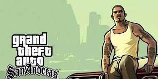
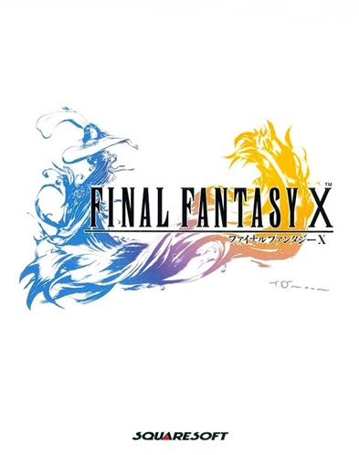
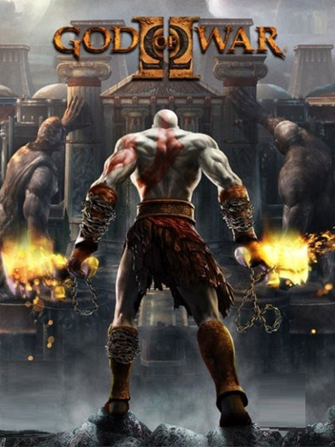
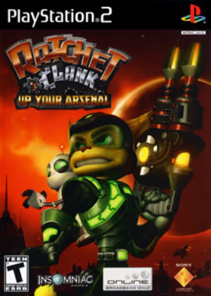
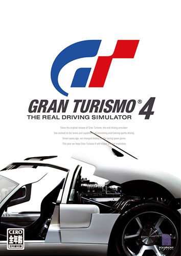

1.Grand Theft Auto: San Andreas -
Uma aventura de mundo aberto que se passa em uma paródia dos Estados Unidos dos anos 90, com uma história rica, personagens memoráveis e uma quantidade impressionante de conteúdo. 2.Shadow of the Colossus -
Um jogo de aventura e ação que segue um jovem em uma jornada para derrotar gigantes colossais em um mundo vasto e misterioso, conhecido por sua atmosfera melancólica e jogabilidade única.
3.Metal Gear Solid 3: Snake Eater -
Uma prequela da série Metal Gear Solid, que segue o agente Snake em uma missão na selva soviética durante a Guerra Fria, conhecido por sua narrativa complexa, personagens envolventes e jogabilidade estratégica.

4.Final Fantasy X -
Um RPG épico que narra a jornada de Tidus e seus aliados para derrotar uma entidade maligna conhecida como Sin, apresentando gráficos impressionantes, uma trilha sonora memorável e um sistema de batalha estratégico.
5.God of War II -
Uma aventura de ação que segue o guerreiro espartano Kratos em sua busca por vingança contra os deuses do Olimpo, destacando-se por sua jogabilidade frenética, combates épicos e mitologia grega envolvente.
6.Resident Evil 4 -
Um jogo de terror de sobrevivência que redefine a série Resident Evil, seguindo o agente Leon Kennedy em uma missão para resgatar a filha do presidente dos Estados Unidos de uma seita misteriosa, conhecido por sua jogabilidade inovadora e atmosfera tensa.

7.Kingdom Hearts II -
Um RPG de ação que combina personagens da Disney e da série Final Fantasy em uma aventura emocionante liderada pelo protagonista Sora, destacando-se por sua narrativa cativante, mundo vasto e sistema de combate dinâmico.

8.Ratchet & Clank: Up Your Arsenal -
Um jogo de plataforma e ação que segue o lombax Ratchet e seu parceiro robô Clank em uma batalha contra o vilão alienígena Dr. Nefarious, destacando-se por sua jogabilidade divertida, armas malucas e humor cativante.
9.Gran Turismo 4 -
Um simulador de corrida que oferece uma experiência de condução realista com uma grande variedade de carros e pistas, conhecido por seus gráficos impressionantes, mecânica de jogo detalhada e extenso modo de carreira.
10.Devil May Cry 3
Um jogo de ação frenética que segue o caçador de demônios Dante em sua jornada para derrotar seu irmão, Virgil, conhecido por sua jogabilidade desafiadora, combate estilizado e enredo cativante.

Esses jogos representam apenas uma fração da incrível biblioteca de títulos do PlayStation 2, mas certamente deixaram uma marca duradoura na indústria dos videogames e nos corações dos jogadores.